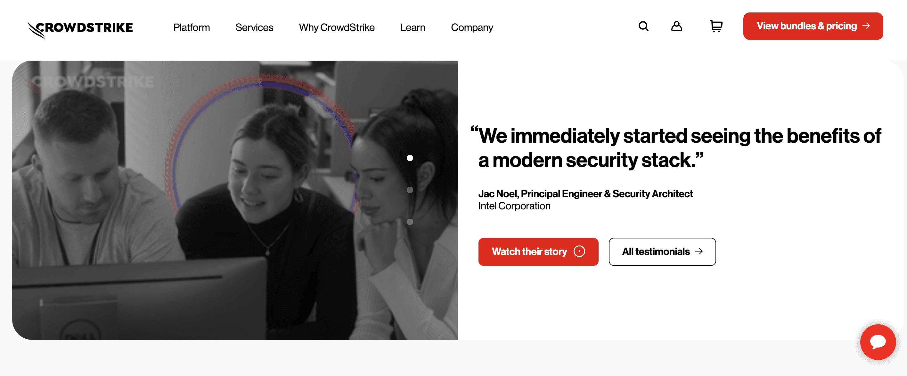
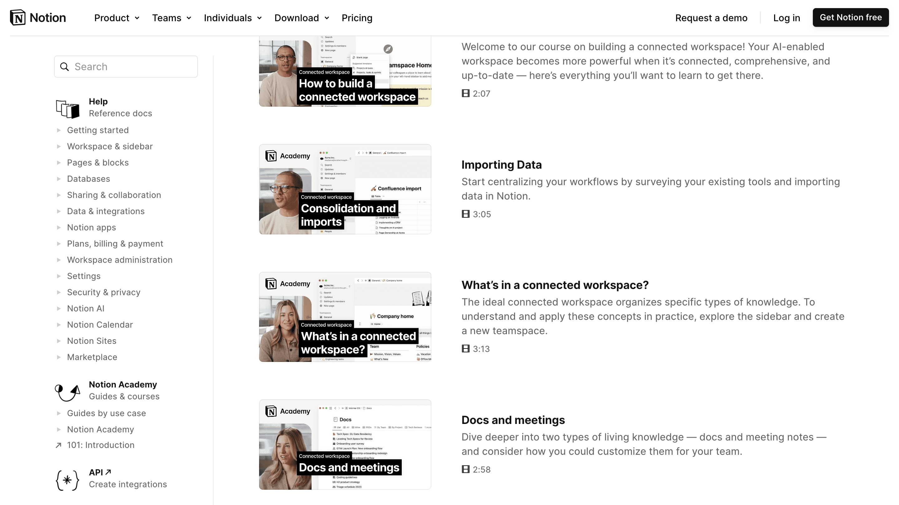
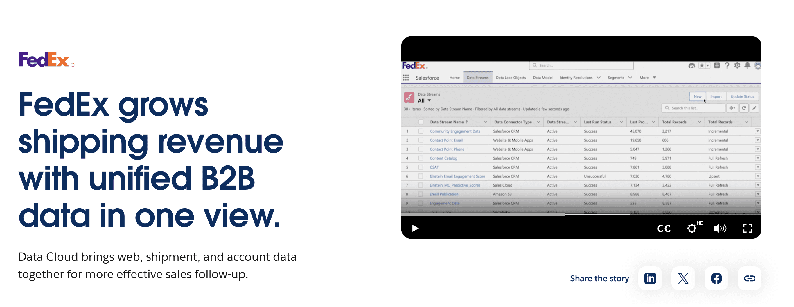

How short videos can help simplify complex B2B products or services
In the fast-paced, ever-changing B2B world, companies often struggle to clearly explain their complex offerings. While consumer products are usually like, "Here's what it does, now buy it," B2B solutions are more like, "Welcome to the land of advanced tech, endless features, and industry-specific magic." It's a lot to unpack.
Trying to communicate all that complexity with text-heavy brochures, endless presentations, or detailed technical docs? It's like trying to summarize a novel on a sticky note - good luck keeping anyone's attention!
That's why short videos are coming into the game. With visuals, snappy storytelling, and clear messaging, they effectively hold attention, boost engagement, and improve understanding. This article explores how short videos help businesses bridge the communication gap.
Short videos don't just boost engagement — they also convert
Studies show that "73% of consumers prefer learning about products through short videos," making them more likely to convert after watching one, as visual content enhances understanding and retention.
Short video's superpower (don't tell anyone):
One of the great advantages of short videos is their scalability: once created, they can be easily distributed across multiple platforms such as websites, email campaigns, and social-media maximizing reach and impact. Videos are also highly shareable, making it easy for messages to reach decision-makers.
It also works another way around: B2B companies can also repurpose their extensive marketing content to support internal communication needs. For instance, existing videos can be adapted for onboarding or training new users.
Types of short videos that work for B2B:
Product Demos
Product demos are ideal for showcasing your product's features and functionality in action, as you only get one first impression.
For instance, Miro, a collaborative platform designed to enhance teamwork, uses short demo videos to highlight each of its solutions, offering new users a quick, clear overview.
These videos aim to give viewers a practical feel for the product by showing exactly how it works, highlighting key features, and guiding them through its practical uses. This helps prospective customers visualize using the product in their own context, ultimately supporting their decision to purchase.

💡 Tools like Supademo and Storylane make it easy to create engaging demos in just minutes.
Explainer Videos
Explainer videos are a great way to simplify complex ideas in just 60–90 seconds. These videos typically provide an overview of a product or service, illustrating how it solves specific problems and the benefits it offers. With eye-catching visuals and snappy messaging, these videos not only grab attention but also encourage people to take action, whether that means clicking a link, visiting a website, or reaching for their credit card. It's like a friendly nudge saying, "Hey, check this out; your life is about to get way easier!"
For example, Slack, a cloud-based team communication platform, use an explainer video to demonstrate how one tool can seamlessly replace multiple applications, streamlining workflows and enhancing efficiency for users. By showcasing its capabilities, Slack highlights its potential to simplify collaboration and improve productivity.

💡 Tools like Tella and Loom enable you to create engaging explainer videos that effectively encourage and inform your users.
Customer Testimonials
Who knows your product better than your customers, huh? CrowdStrike, a cybersecurity company, for example, features positive customer reviews that emphasize how the platform increases security and productivity. These real user experiences effectively demonstrate the platform's value and build trust with potential customers.

💡 Tools like CoolStory and StoryPrompt make it easy to gather authentic user testimonials.
How-To Videos
How-to videos contribute to superior customer onboarding and training. By breaking down processes into easy-to-follow steps, these videos reduce the learning curve and boost user satisfaction. Additionally, they help establish a brand's expertise, building trust and credibility with potential clients. A notable example is Notion Academy, which offers an educational platform with concise videos that teach users how to organize workspaces and master Notion. While this is a great resource, one downside is that it can be hard to find this "treasure," which means many Notion customers remain unaware of it.
💡 Animoto and InVideo are excellent tools for creating engaging how-to videos. Both platforms offer user-friendly interfaces and a variety of templates that make it easy to produce professional-looking content.
Case Studies
Case study videos provide a deep dive into how your product has solved a particular client's problem. These videos typically include a brief overview of the client's challenge, the solution your product provided, and the measurable results.
Short case studies are effective because they demonstrate the tangible impact of your solution through relatable stories that inspire potential buyers. For instance, Salesforce, a cloud-based software company, highlights how it helped FedEx enhance operational efficiency and customer service.

💡 You don't need advanced technology to create case studies; you can use straightforward tools like YouTube, Vimeo, or FlexClip, which offers templates for easy video creation.
And the icing on the cake: a few tips to keep in mind when making short B2B videos:

Focus on Key Features & Benefits
When creating short videos, prioritize the most important features and benefits of your product. Instead of trying to showcase everything, highlight the elements that solve key pain points for your audience. Focus on how your product can make a difference, and simplify the messaging to ensure viewers quickly grasp its value.
Use Clear, Simple Language
Avoid using technical jargon or overly complicated terms. Speak in a way that resonates with a broad audience, focusing on the practical benefits of your product.
Mobile-first format
A significant portion of decision-makers access content via mobile devices. In fact, about 70% of B2B buyers use their smartphones to research products and services, making mobile optimization essential for engaging these audiences effectively.
Storytelling Approach
Use storytelling with real case studies or success stories to help viewers connect emotionally, showing how your product can solve their challenges.
Call to Action
End every video with a clear call to action. Encourage viewers to take the next step, whether it's scheduling a demo, downloading a resource, or reaching out for more information. A simple, actionable CTA keeps the engagement going and drives conversions.